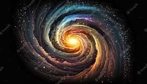
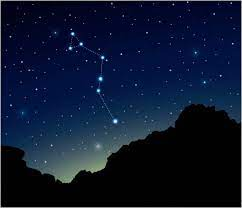
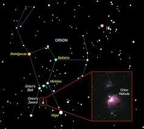
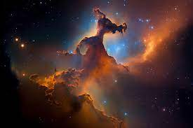
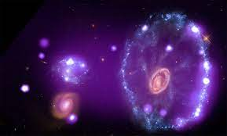
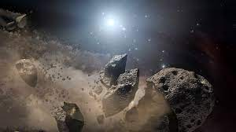

|  Spiral Galaxy: The magnificent M81 spiral galaxy takes center stage in this ultraviolet image from NASA's Galaxy Evolution Explorer.Young stars appear as wisps of bluish-white swirling
around a central golden glow, which comes from a group of much older stars.The large fluffy bluish-white material to the left of M81 is a neighboring galaxy called Homberg IX. This galaxy is practically invisible to the naked human eye.
However, when viewed in ultraviolet light, a region that is actively forming young stars is revealed. Image and caption by NASA.
|

Stellar Babies: Infant stars are glowing gloriously in this infrared image of the Serpens star-forming region, located approximately 848 light-years away in the Serpens constellation. The reddish-pink dots are baby stars deeply
embedded in the cosmic cloud of gas and dust that collapsed to create the stars. Dusty disks of cosmic debris that may eventually form planets surround the infant stars. NASA's Spitzer Space Telescope took this image. Image and caption
by NASA.
|

Chaos in Orion: Baby stars are creating chaos 1,500 light-years away in a cosmic cloud called the Orion nebula. Four massive stars make up the bright yellow area in the center of this false-color image from NASA's Spitzer and Hubble
Space Telescopes. Green indicates hydrogen and sulfur gas in the nebula, which is a cocoon of gas and dust. Red and orange are carbon-rich molecules. Infant stars appear as orange-yellow dots embedded in the nebula. Image and caption by
NASA.
|
| 
Eagle Nebula: A star-making region famous for its space pillars appears in this infrared view from Spitzer. Green denotes cooler dust, including the pillars seen in the center. Red represents hotter dust thought to have been warmed
by the explosion of a massive star about 8,000 to 9,000 years ago. Astronomers estimate that the explosion's blast wave would have spread outward and toppled the three pillars about 6,000 years ago. Since light from the Eagle nebula takes
7,000 years to reach us, this means we wouldn't witness the destruction for about 1,000 years. Image and caption by NASA.
|

Cartwheel galaxy: A false-color view of the Cartwheel galaxy, created with data from Spitzer, Galaxy Evolution Explorer, Hubble and Chandra. Image and caption by NASA.
|
 This image shows the "last hurrah" of a star like our sun. The star is ending its life by casting off its outer layer of gas, which formed a cocoon around the star's remaining core. Ultraviolet
light from the dying star makes the material glow. The burned-out star, called a white dwarf, is the white dot in the center. Our sun will eventually burn out and shroud itself with stellar debris, but not for another 5 billion years.
NASA's Hubble Space Telescope captured this view. Image and caption by NASA.
|